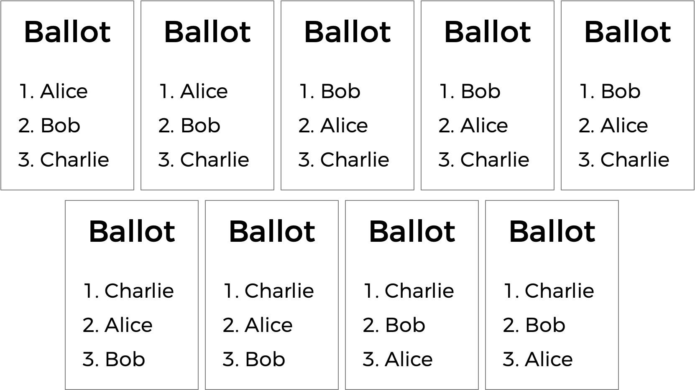

Runoff
Problema a Resolver
Para este programa, você implementará um programa que realiza uma eleição de desempate (runoff election), conforme abaixo.
./runoff Alice Bob Charlie
Number of voters: 5
Rank 1: Alice
Rank 2: Bob
Rank 3: Charlie
Rank 1: Alice
Rank 2: Charlie
Rank 3: Bob
Rank 1: Bob
Rank 2: Charlie
Rank 3: Alice
Rank 1: Bob
Rank 2: Alice
Rank 3: Charlie
Rank 1: Charlie
Rank 2: Alice
Rank 3: Bob
Alice
Começando
Passo a Passo
Eis aqui um passo a passo para a resolução do problema.
Contexto
Em eleições de pluralidade (plurality elections), que seguem um algoritmo muito simples para determinar o vencedor de uma eleição: cada eleitor tem um voto, e o candidato com a maioria dos votos vence.
Mas a votação de pluralidade tem algumas desvantagens. O que acontece, por exemplo, em uma eleição com três candidatos, e as cédulas abaixo são lançadas?

Uma votação de pluralidade aqui declararia um empate entre Alice e Bob, já que cada um tem dois votos. Mas essa é a resposta certa?
Existe outro tipo de sistema de votação conhecido como sistema de votação classificada. Em um sistema de votação classificada, os eleitores podem votar em mais de um candidato. Em vez de votar apenas em sua escolha principal, eles podem classificar os candidatos por ordem de preferência. As cédulas resultantes podem parecer assim:

Aqui, cada eleitor, além de especificar seu candidato de primeira escolha, também indicou suas segunda e terceira escolhas. E agora, o que antes era uma eleição empatada poderia ter um vencedor. A corrida estava originalmente empatada entre Alice e Bob, então Charlie estava fora da disputa. Mas o eleitor que escolheu Charlie preferiu Alice a Bob, então Alice poderia ser declarada a vencedora aqui.
A votação classificada também pode resolver mais uma possível desvantagem da votação de pluralidade. Dê uma olhada nas seguintes cédulas.

Quem deve ganhar esta eleição? Em uma votação de pluralidade em que cada eleitor escolhe apenas sua primeira preferência, Charlie vence esta eleição com quatro votos, em comparação com apenas três para Bob e dois para Alice. Mas a maioria dos eleitores (5 dos 9) ficaria mais feliz com Alice ou Bob em vez de Charlie. Ao considerar preferências classificadas, um sistema de votação pode escolher um vencedor que reflita melhor as preferências dos eleitores.
Um desses sistemas de votação classificada é o sistema de votação instantânea. Em uma eleição de votação instantânea, os eleitores podem classificar quantos candidatos desejarem. Se algum candidato tiver uma maioria (mais de 50%) dos votos de primeira preferência, esse candidato é declarado o vencedor da eleição.
Se nenhum candidato tiver mais de 50% dos votos, então ocorre um "voto de desempate instantâneo". O candidato que recebeu o menor número de votos é eliminado da eleição, e qualquer pessoa que tenha escolhido originalmente esse candidato como sua primeira preferência agora tem sua segunda preferência considerada. Por que fazer assim? Efetivamente, isso simula o que teria acontecido se o candidato menos popular não tivesse participado da eleição desde o início.
O processo se repete: se nenhum candidato tiver a maioria dos votos, o candidato em último lugar é eliminado, e qualquer pessoa que tenha votado neles votará em sua próxima preferência (que ainda não tenha sido eliminada). Uma vez que um candidato tenha a maioria, esse candidato é declarado o vencedor.
Vamos considerar as nove cédulas acima e examinar como uma eleição de desempate seria realizada.
Alice tem dois votos, Bob tem três votos e Charlie tem quatro votos. Para vencer uma eleição com nove pessoas, é necessária uma maioria (cinco votos). Como ninguém tem a maioria, um desempate precisa ser realizado. Alice tem o menor número de votos (com apenas dois), então Alice é eliminada. Os eleitores que votaram originalmente em Alice listaram Bob como segunda preferência, então Bob recebe os dois votos extras. Bob agora tem cinco votos e Charlie ainda tem quatro votos. Bob agora tem a maioria e é declarado o vencedor.
Que casos de borda (corner cases) precisamos considerar aqui?
Uma possibilidade é haver um empate para quem deve ser eliminado. Podemos lidar com esse cenário dizendo que todos os candidatos que estão empatados em último lugar serão eliminados. Se todos os candidatos restantes tiverem exatamente o mesmo número de votos, no entanto, eliminar os candidatos empatados em último lugar significa eliminar todos! Então, nesse caso, teremos que ter cuidado para não eliminar todos e simplesmente declarar a eleição como um empate entre todos os candidatos restantes.
Algumas eleições de votação instantânea não exigem que os eleitores classifiquem todas as suas preferências - então pode haver cinco candidatos em uma eleição, mas um eleitor pode escolher apenas dois. Para fins deste problema, no entanto, ignoraremos esse caso específico e assumiremos que todos os eleitores classificarão todos os candidatos em sua ordem de preferência.
Parece um pouco mais complicado do que uma votação por maioria simples, não é? Mas argumentavelmente tem a vantagem de ser um sistema eleitoral em que o vencedor da eleição representa mais precisamente as preferências dos eleitores.
Começando
Acesse o cs50.dev, clique na sua janela do terminal e execute cd sozinho. Você deve encontrar que o prompt da sua janela do terminal se assemelha ao abaixo:
$Em seguida, execute
wget https://cdn.cs50.net/2023/fall/psets/3/runoff.zipPara baixar um arquivo ZIP chamado runoff.zip em seu codespace.
Em seguida, execute
unzip runoff.zippara criar uma pasta chamada runoff. Você não precisa mais do arquivo ZIP, então pode executar
rm runoff.zipe responda com "y" seguido de Enter no prompt para remover o arquivo ZIP que você baixou.
Agora digite
cd runoffseguido de Enter para mover-se para (ou seja, abrir) esse diretório. Seu prompt agora deve se parecer com o abaixo.
runoff/ $Se tudo ocorreu com sucesso, você deve executar:
lse veja um arquivo chamado runoff.c. Executando code runoff.c deverá abrir o arquivo onde você irá digitar o seu código para este conjunto de problemas. Se não, refaça seus passos e veja se consegue determinar onde errou!
Entendendo
Vamos dar uma olhada em runoff.c. Estamos definindo duas constantes: MAX_CANDIDATES para o número máximo de candidatos na eleição e MAX_VOTERS para o número máximo de eleitores na eleição.
Em seguida, temos um array bidimensional preferences. O array preferences[i] representará todas as preferências para o eleitor número i, e o inteiro preferences[i][j] aqui armazenará o índice do candidato que é a j-ésima preferência para o eleitor i.
Em seguida, há uma struct chamada candidate. Todo candidate tem um campo string para o seu nome, um int representando o número de votos que ele possui atualmente, e um valor bool chamado eliminated que indica se o candidato foi eliminado da eleição. O array candidates acompanhará todos os candidatos na eleição.
O programa também tem duas variáveis globais: voter_count e candidate_count.
Agora, para o main. Observe que após determinar o número de candidatos e o número de eleitores, o loop de votação principal começa, dando a cada eleitor uma chance de votar. Conforme o eleitor insere suas preferências, a função vote é chamada para acompanhar todas as preferências. Se em algum momento a cédula for considerada inválida, o programa será encerrado.
Uma vez que todos os votos forem registrados, outro loop começa: este vai continuar verificando o processo de segunda rodada, verificando se há um vencedor e eliminando o candidato em último lugar até que haja um vencedor.
A primeira chamada aqui é para uma função chamada tabulate, que deve analisar todas as preferências dos eleitores e calcular o total de votos atual, olhando para a primeira escolha de cada eleitor que ainda não foi eliminada. Em seguida, a função print_winner deve imprimir o vencedor, se houver; se houver, o programa termina. Mas caso contrário, o programa precisa determinar o menor número de votos que alguém ainda na eleição recebeu (através de uma chamada para a função find_min). Se todos os candidatos na eleição receberam o mesmo número de votos (como determinado pela função is_tie), a eleição é declarada empatada; caso contrário, o candidato (ou candidatos) em último lugar é eliminado da eleição através de uma chamada para a função eliminate.
Se você olhar um pouco mais abaixo no arquivo, verá que essas funções - vote, tabulate, print_winner, find_min, is_tie e eliminate - são todas deixadas para você completar!
Especificação
Conclua a implementação de runoff.c de tal forma que ela simule uma eleição de desempate. Você deve completar as implementações das funções vote, tabulate, print_winner, find_min, is_tie e eliminate, e não deve modificar nada mais em runoff.c (e a inclusão de arquivos de cabeçalho adicionais, se desejar).
vote
Conclua a função vote.
- A função recebe os argumentos
voter,rankename. Senamecorresponder ao nome de um candidato válido, você deve atualizar a matriz global de preferências para indicar que o eleitorvotertem aquele candidato como sua preferência derank(onde0é a primeira preferência,1é a segunda preferência, etc.). - Se a preferência for registrada com sucesso, a função deve retornar
true; caso contrário, a função deve retornarfalse(por exemplo, senamenão for o nome de um dos candidatos). - Você pode assumir que nenhum candidato terá o mesmo nome.
Dicas
- Lembre-se que
candidate_countarmazena o número de candidatos na eleição. - Lembre-se que você pode usar
strcmppara comparar duas strings. - Lembre-se que
preferences[i][j]armazena o índice do candidato que é aj-ésima preferência classificada para oi-ésimo eleitor.
tabulate
Complete a função tabulate.
- A função deve atualizar o número de
votosde cada candidato nesta fase da eleição. - Lembre-se de que em cada fase da eleição, cada eleitor vota efetivamente em seu candidato mais preferido que ainda não foi eliminado.
Dicas
- Lembre-se de que
voter_countarmazena o número de eleitores na eleição e que, para cada eleitor em nossa eleição, queremos contar um voto. - Lembre-se de que, para um eleitor
i, seu candidato de primeira escolha é representado porpreferences[i][0], seu candidato de segunda escolha porpreferences[i][1], etc. - Lembre-se de que a
structcandidatetem um campo chamadoeliminated, que serátruese o candidato tiver sido eliminado da eleição. - Lembre-se de que a
structcandidatetem um campo chamadovotes, que provavelmente você desejará atualizar para o candidato preferido de cada eleitor. - Depois de lançar um voto para o candidato de primeira escolha não eliminado de um eleitor, você vai querer parar por aí, não continuar pela lista! Lembre-se de que você pode sair de um loop mais cedo usando
breakdentro de uma condição.
print_winner
Complete a função print_winner.
- Se algum candidato tiver mais da metade dos votos, seu nome deve ser impresso e a função deve retornar
true. - Se ninguém ganhou a eleição ainda, a função deve retornar
false.
Dicas
- Lembre-se de que
voter_countarmazena o número de eleitores na eleição. Dado isso, como você expressaria o número de votos necessários para vencer a eleição?
find_min
Complete a função find_min.
- A função deve retornar o total mínimo de votos para qualquer candidato que ainda esteja na eleição.
Dicas
- Provavelmente, você desejará percorrer os candidatos para encontrar aquele que ainda está na eleição e possui o menor número de votos. Que informações você deve manter à medida que percorre os candidatos?
is_tie
Complete a função is_tie.
- A função recebe um argumento
min, que será o número mínimo de votos que alguém na eleição atualmente possui. - A função deve retornar
truese todos os candidatos que permanecem na eleição possuem o mesmo número de votos e deve retornarfalsecaso contrário.
Dicas
- Lembre-se de que um empate acontece se todos os candidatos ainda na eleição tiverem o mesmo número de votos. Observe também que a função
is_tierecebe um argumentomin, que é o menor número de votos que qualquer candidato possui atualmente. Como você pode usar essa informação para determinar se a eleição é um empate (ou, inversamente, não é um empate)?
eliminate
Complete a função eliminate.
- A função recebe um argumento
min, que será o número mínimo de votos que qualquer candidato na eleição atualmente possui. - A função deve eliminar o candidato (ou candidatos) que possuem
minnúmero de votos.
Uso
Seu programa deve se comportar conforme o exemplo abaixo:
./runoff Alice Bob Charlie
Number of voters: 5
Rank 1: Alice
Rank 2: Charlie
Rank 3: Bob
Rank 1: Alice
Rank 2: Charlie
Rank 3: Bob
Rank 1: Bob
Rank 2: Charlie
Rank 3: Alice
Rank 1: Bob
Rank 2: Charlie
Rank 3: Alice
Rank 1: Charlie
Rank 2: Alice
Rank 3: Bob
Alice
Testando
Certifique-se de testar seu código para garantir que ele lida com…
- Uma eleição com qualquer número de candidatos (até o
MAXde9) - Votação em um candidato por nome
- Votos inválidos para candidatos que não estão na cédula
- Imprimir o vencedor da eleição se houver apenas um
- Não eliminar ninguém no caso de um empate entre todos os candidatos restantes
Execute o abaixo para avaliar a correção do seu código usando check50. Mas certifique-se de compilar e testar também!
check50 cs50/problems/2024/x/runoffExecute o código abaixo para avaliar o estilo do seu código usando style50.
style50 runoff.cComo Submeter
No seu terminal, execute o comando abaixo para submeter o seu trabalho.
submit50 cs50/problems/2024/x/runoff